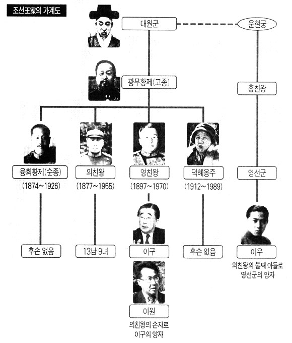

1930년 5월 4일, 조선왕조 고종 황제의 둘째 아들 의친왕의 다섯째 딸로 태어났다. 아명은 길상이다. 생모 김금덕이 일찍 출궁한 관계로, 초년기에는 서울 관훈동에 있던 의친왕의 사저 사동궁에서 의친왕비와 함께 20여년간 생활하였다. 경성유치원1 , 경성여자사범부속학교, 경기여자고등학교, 이화여자대학교 음대 피아노과를 졸업하였다. 집안에서 약조한 정혼자가 있었으나, 16세에 '결혼은 내가 해서 사는 것'이라 주장하여 약혼 파기를 관철시켰다.
대학을 졸업한 20세에 풍문여고 음악교사로 보름간 재직하였으나,2 그 해 한국전쟁이 발발하였다. 당시 의친왕은 왕비와 후실, 아버지 고종 황제의 후궁을 이끌고 부산으로 피란을 갔다. 이후 부산에서 김금덕과 재회한 이해경은 수복 후 서울로 돌아가 함께 생활했다. 1955년 폐렴으로 서거한 의친왕의 장례를 치르고 1년 후인 1956년 도미하였다.

1956년 텍사스주 매리 하딘 베일러 칼리지에서 유학 생활을 시작하였다. 학비를 벌기 위해 일본 백화점에 취직해 매니저 비서로 근무하였다. 당시 이해경은 학생 신분으로 일을 하고 있었으므로 불법체류자에 해당하였으나, 대졸 이상 학력자에게 영주권을 허가하는 법안이 새로 통과되어 영주권을 획득할 수 있었다. 1969년 컬럼비아대 동양학 도서관에 신규 개설된 한국학 부서에 지원하여 합격하였고, 사서로 27년간 일하고 정년퇴직하였다. 정년퇴직 후 노인합창단 지휘자 등 커뮤니티 봉사활동을 하였다. 40년간 사귀던 남자친구가 있었으나 2010년 사별하였고, 평생 독신으로 지내고 있다.3 4